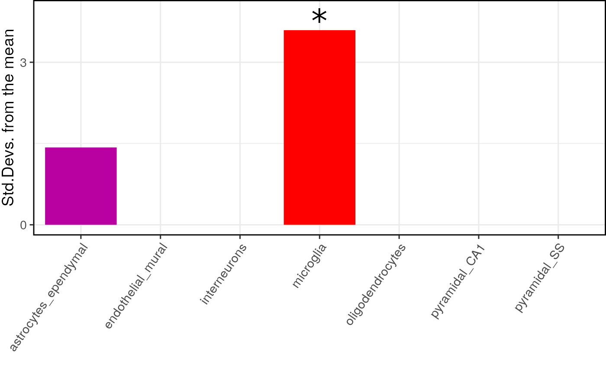

ewce_plot generates plots of EWCE enrichment results
ewce_plot(
total_res,
mtc_method = "bonferroni",
ctd = NULL,
align = "v",
rel_heights = c(0.3, 1),
axis = "lr"
)Results data.frame generated using bootstrap_enrichment_test or ewce_expression_data functions. Multiple results tables can be merged into one results table, as long as the 'list' column is set to distinguish them. Multiple testing correction is then applied across all merged results.
Method to be used for multiple testing correction. Argument is passed to p.adjust (DEFAULT: "bonferroni).
CellTypeDataset object. Should be provided so that the dendrogram can be taken from it and added to plots
(optional) Specifies whether graphs in the grid should be horizontally ("h") or vertically ("v") aligned. Options are "none" (default), "hv" (align in both directions), "h", and "v".
(optional) Numerical vector of relative rows heights. Works just as
rel_widths does, but for rows rather than columns.
(optional) Specifies whether graphs should be aligned by the left ("l"), right ("r"), top ("t"), or bottom ("b")
margins. Options are "none" (default), or a string of any combination of l, r, t, and b in any order (e.g. "tblr" or "rlbt" for aligning all margins).
Must be specified if any of the graphs are complex (e.g. faceted) and alignment is specified and desired. See align_plots() for details.
A ggplot containing the plot
## Bootstrap significance test,
## no control for transcript length or GC content
## Use pre-computed results to speed up example
full_results <- EWCE::example_bootstrap_results()
#> Loading precomputed example bootstrap results.
## Generate the plot
print(EWCE::ewce_plot(
total_res = full_results$results,
mtc_method = "BH"
))
#> Loading required namespace: cowplot
#> Loading required namespace: gridExtra
#> $plain

#>